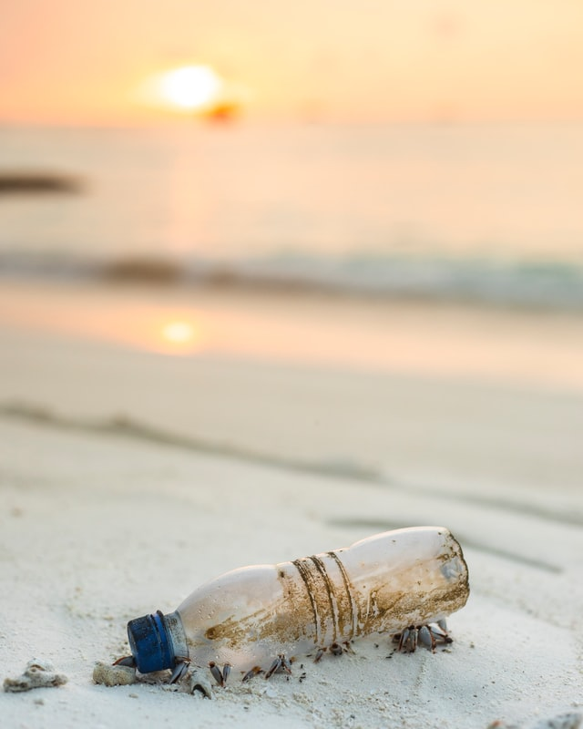
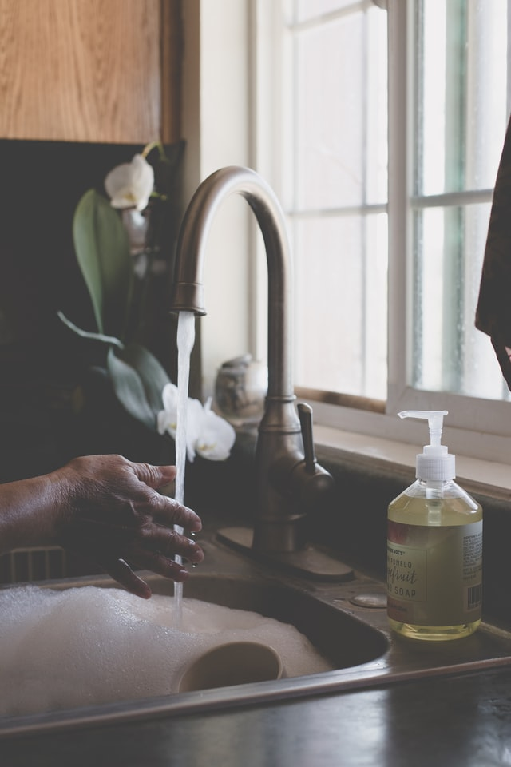

Ma salle de bain c'est du solide !
Le solide est le nouveau cosmétique à la mode. Adieu au liquide et surtout à ce qui permet de le contenir c’est à dire le plus souvent des flacons en plastique. Se lancer dans le Zéro Déchet c’est non seulement éviter de produire des déchets mais aussi utiliser des produits plus sains pour soi et pour l’environnement. Les cosmétiques solides allient parfaitement les deux.
article complet
Débuter le zéro déchet
Ce qui fait le plus peur lorsqu’on souhaite débuter dans le zéro déchet c’est qu’on ne sait généralement pas par quoi commencer. La tâche est si vaste qu’on peut vite s’y perdre et perdre ainsi la motivation de se lancer. Voici quelques astuces pour bien se lancer dans le zéro déchet sans se mettre la pression. Un petit pas après l’autre !
article complet

Sauvons la nature de la pollution plastique
Chaque année, 8 millions de tonnes de plastiques finissent dans nos océans. Demandons aux gouvernements du monde entier d’agir pour stopper cette crise avant qu’il ne soit trop tard.
article complet

DIY : Une recette de liquide vaisselle réellement efficace
Quand on passe au mode de vie zéro-déchet, on se rend vite compte qu’il est bien plus économique, pratique et moins polluant de fabriquer ses propres produits d’entretien. Avec quelques produits de base, on peut faire de nombreux produits (liquide vaisselle, produit multi-usage, lessive etc.) ce qui est très économique. Ensuite, on sait exactement ce qu’on met dedans, en l’occurrence des produits qui ne sont pas toxiques pour notre belle planète. Et pendant que les petits poissons nous disent merci, j’avoue aussi qu’il y a un certain plaisir dans le fait de “fabriquer” les choses soi-même.
article complet